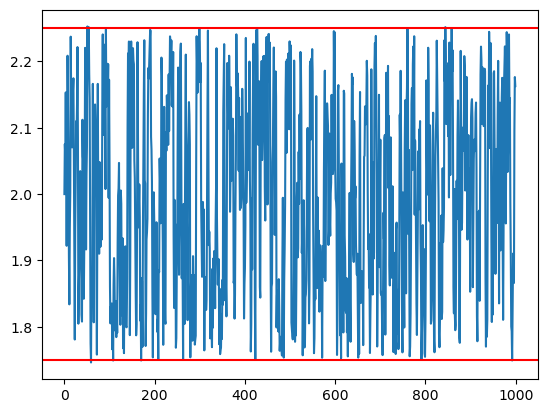
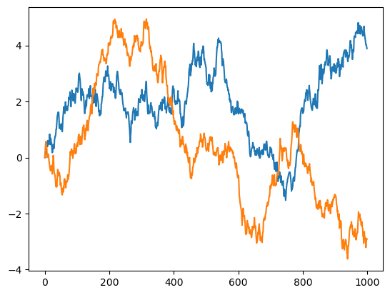

Add forbidden plane region#
import molsysmt as msm
import openmm as mm
from openmm import unit
from openmm import app
from tqdm import tqdm
import numpy as np
from matplotlib import pyplot as plt
system = mm.System()
system.addParticle(39.948 * unit.amu) # masa del átomo de argón
0
msm.thirds.openmm.forces.add_forbidden_plane_region(system, point='[1.0, 0.0, 0.0] nm', normal_vector=[1,0,0],
width='1.5 nm', force_constant = '5000 kilojoules/(mol*angstroms**2)',
pbc=True)
0
# Formalismo NVT
temperature = 300*unit.kelvin
integration_timestep = 2.0*unit.femtoseconds
saving_timestep = 1.00*unit.picoseconds
simulation_time = 1000.*unit.picoseconds
saving_steps = int(saving_timestep/integration_timestep)
num_saving_steps = int(simulation_time/saving_timestep)
friction = 5.0/unit.picoseconds
integrator = mm.LangevinIntegrator(temperature, friction, integration_timestep)
platform = mm.Platform.getPlatformByName('OpenCL')
times = np.zeros(num_saving_steps, np.float32) * unit.picoseconds
positions = np.zeros([num_saving_steps,3], np.float32) * unit.nanometers
velocities = np.zeros([num_saving_steps,3], np.float32) * unit.nanometers/unit.picosecond
potential_energies = np.zeros([num_saving_steps], np.float32) * unit.kilocalories_per_mole
kinetic_energies = np.zeros([num_saving_steps], np.float32) * unit.kilocalories_per_mole
initial_positions = [[2.0, 0.0, 0.0]] * unit.nanometers
context = mm.Context(system, integrator, platform)
context.setPositions(initial_positions)
L = 2.0
v1 = [L,0,0] * unit.nanometers
v2 = [0,L,0] * unit.nanometers
v3 = [0,0,L] * unit.nanometers
L = L * unit.nanometers
context.setPeriodicBoxVectors(v1, v2, v3)
state = context.getState(getEnergy=True, getPositions=True, getVelocities=True)
times[0] = state.getTime()
positions[0] = state.getPositions()[0]
velocities[0] = state.getVelocities()[0]
kinetic_energies[0]=state.getKineticEnergy()
potential_energies[0]=state.getPotentialEnergy()
for ii in tqdm(range(1,num_saving_steps)):
context.getIntegrator().step(saving_steps)
state_xx = context.getState(getEnergy=True, getPositions=True, getVelocities=True)
times[ii] = state_xx.getTime()
positions[ii] = state_xx.getPositions()[0]
velocities[ii] = state_xx.getVelocities()[0]
kinetic_energies[ii]=state_xx.getKineticEnergy()
potential_energies[ii]=state_xx.getPotentialEnergy()
0%| | 0/999 [00:00<?, ?it/s]
0%| | 2/999 [00:00<00:51, 19.28it/s]
0%| | 4/999 [00:00<00:54, 18.42it/s]
1%| | 6/999 [00:00<01:05, 15.10it/s]
1%| | 8/999 [00:00<01:01, 16.06it/s]
1%| | 10/999 [00:00<01:00, 16.31it/s]
1%|▏ | 13/999 [00:00<00:49, 19.85it/s]
2%|▏ | 16/999 [00:00<00:46, 21.27it/s]
2%|▏ | 19/999 [00:01<00:49, 19.75it/s]
2%|▏ | 22/999 [00:01<00:51, 18.86it/s]
3%|▎ | 25/999 [00:01<00:47, 20.41it/s]
3%|▎ | 28/999 [00:01<00:47, 20.31it/s]
3%|▎ | 31/999 [00:01<00:50, 19.25it/s]
3%|▎ | 33/999 [00:01<00:51, 18.82it/s]
4%|▎ | 35/999 [00:01<00:51, 18.89it/s]
4%|▎ | 37/999 [00:01<00:51, 18.61it/s]
4%|▍ | 39/999 [00:02<00:52, 18.39it/s]
4%|▍ | 41/999 [00:02<00:52, 18.16it/s]
4%|▍ | 44/999 [00:02<00:47, 19.98it/s]
5%|▍ | 46/999 [00:02<00:47, 19.96it/s]
5%|▍ | 48/999 [00:02<00:48, 19.64it/s]
5%|▌ | 50/999 [00:02<00:50, 18.94it/s]
5%|▌ | 52/999 [00:02<00:50, 18.58it/s]
5%|▌ | 54/999 [00:02<00:52, 18.06it/s]
6%|▌ | 56/999 [00:02<00:51, 18.48it/s]
6%|▌ | 58/999 [00:03<00:50, 18.55it/s]
6%|▌ | 61/999 [00:03<00:46, 20.16it/s]
6%|▋ | 64/999 [00:03<00:45, 20.39it/s]
7%|▋ | 67/999 [00:03<00:45, 20.36it/s]
7%|▋ | 70/999 [00:03<00:47, 19.59it/s]
7%|▋ | 72/999 [00:03<00:47, 19.64it/s]
7%|▋ | 74/999 [00:03<00:53, 17.14it/s]
8%|▊ | 76/999 [00:04<00:52, 17.52it/s]
8%|▊ | 79/999 [00:04<00:53, 17.13it/s]
8%|▊ | 81/999 [00:04<00:54, 16.92it/s]
8%|▊ | 84/999 [00:04<00:52, 17.55it/s]
9%|▊ | 87/999 [00:04<00:46, 19.69it/s]
9%|▉ | 90/999 [00:04<00:45, 20.11it/s]
9%|▉ | 93/999 [00:04<00:47, 19.24it/s]
10%|▉ | 96/999 [00:05<00:43, 20.53it/s]
10%|▉ | 99/999 [00:05<00:46, 19.40it/s]
10%|█ | 101/999 [00:05<00:46, 19.31it/s]
10%|█ | 103/999 [00:05<00:46, 19.34it/s]
11%|█ | 106/999 [00:05<00:42, 21.13it/s]
11%|█ | 109/999 [00:05<00:40, 22.22it/s]
11%|█ | 112/999 [00:05<00:42, 21.06it/s]
12%|█▏ | 115/999 [00:05<00:41, 21.32it/s]
12%|█▏ | 118/999 [00:06<00:40, 22.01it/s]
12%|█▏ | 121/999 [00:06<00:41, 21.08it/s]
12%|█▏ | 124/999 [00:06<00:39, 22.06it/s]
13%|█▎ | 127/999 [00:06<00:37, 23.00it/s]
13%|█▎ | 130/999 [00:06<00:37, 23.29it/s]
13%|█▎ | 133/999 [00:06<00:35, 24.08it/s]
14%|█▎ | 136/999 [00:06<00:38, 22.48it/s]
14%|█▍ | 139/999 [00:07<00:41, 20.55it/s]
14%|█▍ | 142/999 [00:07<00:42, 20.28it/s]
15%|█▍ | 145/999 [00:07<00:45, 18.87it/s]
15%|█▍ | 147/999 [00:07<00:45, 18.69it/s]
15%|█▌ | 150/999 [00:07<00:43, 19.67it/s]
15%|█▌ | 153/999 [00:07<00:41, 20.58it/s]
16%|█▌ | 156/999 [00:07<00:42, 19.99it/s]
16%|█▌ | 159/999 [00:08<00:41, 20.03it/s]
16%|█▌ | 162/999 [00:08<00:43, 19.35it/s]
17%|█▋ | 165/999 [00:08<00:41, 20.06it/s]
17%|█▋ | 168/999 [00:08<00:41, 20.02it/s]
17%|█▋ | 171/999 [00:08<00:42, 19.56it/s]
17%|█▋ | 174/999 [00:08<00:41, 19.93it/s]
18%|█▊ | 177/999 [00:09<00:45, 18.22it/s]
18%|█▊ | 179/999 [00:09<00:44, 18.31it/s]
18%|█▊ | 181/999 [00:09<00:44, 18.28it/s]
18%|█▊ | 184/999 [00:09<00:42, 19.23it/s]
19%|█▊ | 186/999 [00:09<00:42, 19.01it/s]
19%|█▉ | 188/999 [00:09<00:42, 19.16it/s]
19%|█▉ | 191/999 [00:09<00:40, 19.76it/s]
19%|█▉ | 193/999 [00:09<00:42, 19.10it/s]
20%|█▉ | 195/999 [00:09<00:42, 19.00it/s]
20%|█▉ | 197/999 [00:10<00:45, 17.71it/s]
20%|█▉ | 199/999 [00:10<00:44, 18.12it/s]
20%|██ | 201/999 [00:10<00:45, 17.72it/s]
20%|██ | 203/999 [00:10<00:44, 17.94it/s]
21%|██ | 206/999 [00:10<00:43, 18.12it/s]
21%|██ | 208/999 [00:10<00:43, 18.34it/s]
21%|██ | 211/999 [00:10<00:39, 20.14it/s]
21%|██▏ | 214/999 [00:10<00:39, 19.91it/s]
22%|██▏ | 216/999 [00:11<00:39, 19.89it/s]
22%|██▏ | 218/999 [00:11<00:40, 19.16it/s]
22%|██▏ | 220/999 [00:11<00:41, 18.88it/s]
22%|██▏ | 222/999 [00:11<00:42, 18.49it/s]
22%|██▏ | 224/999 [00:11<00:41, 18.50it/s]
23%|██▎ | 226/999 [00:11<00:41, 18.60it/s]
23%|██▎ | 228/999 [00:11<00:50, 15.33it/s]
23%|██▎ | 230/999 [00:11<00:46, 16.36it/s]
23%|██▎ | 233/999 [00:12<00:45, 17.01it/s]
24%|██▎ | 236/999 [00:12<00:42, 18.09it/s]
24%|██▍ | 238/999 [00:12<00:43, 17.57it/s]
24%|██▍ | 240/999 [00:12<00:43, 17.48it/s]
24%|██▍ | 242/999 [00:12<00:42, 17.80it/s]
25%|██▍ | 245/999 [00:12<00:38, 19.55it/s]
25%|██▍ | 247/999 [00:12<00:39, 19.13it/s]
25%|██▍ | 249/999 [00:12<00:40, 18.30it/s]
25%|██▌ | 251/999 [00:13<00:42, 17.55it/s]
25%|██▌ | 253/999 [00:13<00:45, 16.28it/s]
26%|██▌ | 255/999 [00:13<00:43, 16.97it/s]
26%|██▌ | 257/999 [00:13<00:42, 17.62it/s]
26%|██▌ | 259/999 [00:13<00:40, 18.09it/s]
26%|██▌ | 261/999 [00:13<00:41, 17.79it/s]
26%|██▋ | 263/999 [00:13<00:42, 17.31it/s]
27%|██▋ | 266/999 [00:13<00:38, 18.89it/s]
27%|██▋ | 268/999 [00:14<00:40, 18.14it/s]
27%|██▋ | 270/999 [00:14<00:39, 18.35it/s]
27%|██▋ | 272/999 [00:14<00:39, 18.22it/s]
27%|██▋ | 274/999 [00:14<00:39, 18.43it/s]
28%|██▊ | 276/999 [00:14<00:40, 18.03it/s]
28%|██▊ | 278/999 [00:14<00:40, 18.00it/s]
28%|██▊ | 280/999 [00:14<00:41, 17.49it/s]
28%|██▊ | 282/999 [00:14<00:40, 17.51it/s]
28%|██▊ | 284/999 [00:14<00:40, 17.55it/s]
29%|██▊ | 287/999 [00:15<00:35, 19.82it/s]
29%|██▉ | 290/999 [00:15<00:35, 20.23it/s]
29%|██▉ | 293/999 [00:15<00:37, 18.66it/s]
30%|██▉ | 295/999 [00:15<00:37, 18.70it/s]
30%|██▉ | 297/999 [00:15<00:38, 18.28it/s]
30%|██▉ | 299/999 [00:15<00:39, 17.86it/s]
30%|███ | 302/999 [00:15<00:36, 19.20it/s]
30%|███ | 304/999 [00:15<00:36, 18.97it/s]
31%|███ | 307/999 [00:16<00:35, 19.41it/s]
31%|███ | 310/999 [00:16<00:33, 20.47it/s]
31%|███▏ | 313/999 [00:16<00:35, 19.17it/s]
32%|███▏ | 315/999 [00:16<00:38, 17.65it/s]
32%|███▏ | 318/999 [00:16<00:35, 19.34it/s]
32%|███▏ | 321/999 [00:16<00:35, 19.11it/s]
32%|███▏ | 323/999 [00:16<00:35, 18.86it/s]
33%|███▎ | 325/999 [00:17<00:36, 18.59it/s]
33%|███▎ | 327/999 [00:17<00:36, 18.64it/s]
33%|███▎ | 329/999 [00:17<00:36, 18.25it/s]
33%|███▎ | 331/999 [00:17<00:35, 18.58it/s]
33%|███▎ | 333/999 [00:17<00:35, 18.64it/s]
34%|███▎ | 335/999 [00:17<00:35, 18.70it/s]
34%|███▎ | 337/999 [00:17<00:35, 18.79it/s]
34%|███▍ | 339/999 [00:17<00:35, 18.36it/s]
34%|███▍ | 341/999 [00:17<00:35, 18.48it/s]
34%|███▍ | 343/999 [00:18<00:35, 18.24it/s]
35%|███▍ | 345/999 [00:18<00:35, 18.64it/s]
35%|███▍ | 347/999 [00:18<00:35, 18.46it/s]
35%|███▍ | 349/999 [00:18<00:34, 18.69it/s]
35%|███▌ | 351/999 [00:18<00:35, 18.20it/s]
35%|███▌ | 353/999 [00:18<00:35, 18.26it/s]
36%|███▌ | 355/999 [00:18<00:35, 18.23it/s]
36%|███▌ | 357/999 [00:18<00:35, 17.85it/s]
36%|███▌ | 360/999 [00:18<00:33, 18.87it/s]
36%|███▌ | 362/999 [00:19<00:33, 19.05it/s]
36%|███▋ | 364/999 [00:19<00:33, 19.17it/s]
37%|███▋ | 366/999 [00:19<00:33, 18.92it/s]
37%|███▋ | 369/999 [00:19<00:32, 19.46it/s]
37%|███▋ | 371/999 [00:19<00:36, 17.43it/s]
37%|███▋ | 373/999 [00:19<00:37, 16.50it/s]
38%|███▊ | 375/999 [00:19<00:39, 15.84it/s]
38%|███▊ | 378/999 [00:19<00:34, 17.84it/s]
38%|███▊ | 380/999 [00:20<00:35, 17.61it/s]
38%|███▊ | 383/999 [00:20<00:30, 20.27it/s]
39%|███▊ | 386/999 [00:20<00:29, 21.13it/s]
39%|███▉ | 389/999 [00:20<00:28, 21.04it/s]
39%|███▉ | 392/999 [00:20<00:27, 22.43it/s]
40%|███▉ | 395/999 [00:20<00:26, 22.79it/s]
40%|███▉ | 398/999 [00:20<00:26, 22.81it/s]
40%|████ | 401/999 [00:20<00:26, 22.97it/s]
40%|████ | 404/999 [00:21<00:25, 23.20it/s]
41%|████ | 407/999 [00:21<00:26, 22.39it/s]
41%|████ | 410/999 [00:21<00:27, 21.48it/s]
41%|████▏ | 413/999 [00:21<00:26, 22.21it/s]
42%|████▏ | 416/999 [00:21<00:25, 22.61it/s]
42%|████▏ | 419/999 [00:21<00:26, 21.83it/s]
42%|████▏ | 422/999 [00:21<00:28, 20.57it/s]
43%|████▎ | 425/999 [00:22<00:28, 19.81it/s]
43%|████▎ | 428/999 [00:22<00:28, 20.03it/s]
43%|████▎ | 431/999 [00:22<00:30, 18.78it/s]
43%|████▎ | 433/999 [00:22<00:30, 18.68it/s]
44%|████▎ | 435/999 [00:22<00:30, 18.76it/s]
44%|████▎ | 437/999 [00:22<00:29, 18.84it/s]
44%|████▍ | 440/999 [00:22<00:28, 19.76it/s]
44%|████▍ | 442/999 [00:23<00:28, 19.49it/s]
44%|████▍ | 444/999 [00:23<00:29, 19.13it/s]
45%|████▍ | 446/999 [00:23<00:29, 19.01it/s]
45%|████▍ | 449/999 [00:23<00:29, 18.57it/s]
45%|████▌ | 451/999 [00:23<00:29, 18.43it/s]
45%|████▌ | 453/999 [00:23<00:30, 17.88it/s]
46%|████▌ | 455/999 [00:23<00:30, 17.74it/s]
46%|████▌ | 457/999 [00:23<00:31, 17.11it/s]
46%|████▌ | 459/999 [00:24<00:32, 16.77it/s]
46%|████▌ | 461/999 [00:24<00:31, 16.96it/s]
46%|████▋ | 463/999 [00:24<00:31, 17.24it/s]
47%|████▋ | 465/999 [00:24<00:30, 17.55it/s]
47%|████▋ | 468/999 [00:24<00:29, 18.13it/s]
47%|████▋ | 471/999 [00:24<00:29, 18.19it/s]
47%|████▋ | 473/999 [00:24<00:28, 18.53it/s]
48%|████▊ | 476/999 [00:24<00:28, 18.36it/s]
48%|████▊ | 478/999 [00:25<00:28, 18.28it/s]
48%|████▊ | 480/999 [00:25<00:28, 18.18it/s]
48%|████▊ | 482/999 [00:25<00:28, 18.07it/s]
48%|████▊ | 484/999 [00:25<00:28, 18.01it/s]
49%|████▊ | 486/999 [00:25<00:30, 17.09it/s]
49%|████▉ | 488/999 [00:25<00:31, 16.35it/s]
49%|████▉ | 491/999 [00:25<00:27, 18.59it/s]
49%|████▉ | 493/999 [00:25<00:28, 17.76it/s]
50%|████▉ | 495/999 [00:26<00:28, 17.82it/s]
50%|████▉ | 497/999 [00:26<00:28, 17.68it/s]
50%|████▉ | 499/999 [00:26<00:30, 16.35it/s]
50%|█████ | 502/999 [00:26<00:28, 17.43it/s]
50%|█████ | 504/999 [00:26<00:28, 17.37it/s]
51%|█████ | 506/999 [00:26<00:28, 17.33it/s]
51%|█████ | 508/999 [00:26<00:28, 17.10it/s]
51%|█████ | 510/999 [00:26<00:29, 16.81it/s]
51%|█████▏ | 512/999 [00:27<00:28, 17.23it/s]
51%|█████▏ | 514/999 [00:27<00:27, 17.43it/s]
52%|█████▏ | 517/999 [00:27<00:27, 17.81it/s]
52%|█████▏ | 519/999 [00:27<00:27, 17.74it/s]
52%|█████▏ | 521/999 [00:27<00:27, 17.23it/s]
52%|█████▏ | 524/999 [00:27<00:25, 18.84it/s]
53%|█████▎ | 526/999 [00:27<00:25, 18.59it/s]
53%|█████▎ | 528/999 [00:27<00:26, 18.00it/s]
53%|█████▎ | 530/999 [00:28<00:28, 16.45it/s]
53%|█████▎ | 532/999 [00:28<00:27, 16.69it/s]
53%|█████▎ | 534/999 [00:28<00:27, 17.19it/s]
54%|█████▎ | 536/999 [00:28<00:25, 17.87it/s]
54%|█████▍ | 538/999 [00:28<00:25, 18.25it/s]
54%|█████▍ | 540/999 [00:28<00:24, 18.63it/s]
54%|█████▍ | 543/999 [00:28<00:24, 18.35it/s]
55%|█████▍ | 545/999 [00:28<00:24, 18.52it/s]
55%|█████▍ | 547/999 [00:28<00:24, 18.79it/s]
55%|█████▍ | 549/999 [00:29<00:24, 18.53it/s]
55%|█████▌ | 551/999 [00:29<00:23, 18.85it/s]
55%|█████▌ | 553/999 [00:29<00:24, 18.52it/s]
56%|█████▌ | 555/999 [00:29<00:23, 18.60it/s]
56%|█████▌ | 557/999 [00:29<00:24, 18.26it/s]
56%|█████▌ | 559/999 [00:29<00:23, 18.66it/s]
56%|█████▌ | 561/999 [00:29<00:23, 18.37it/s]
56%|█████▋ | 563/999 [00:29<00:23, 18.24it/s]
57%|█████▋ | 566/999 [00:29<00:21, 19.84it/s]
57%|█████▋ | 569/999 [00:30<00:20, 20.93it/s]
57%|█████▋ | 572/999 [00:30<00:20, 20.52it/s]
58%|█████▊ | 575/999 [00:30<00:19, 21.59it/s]
58%|█████▊ | 578/999 [00:30<00:19, 21.75it/s]
58%|█████▊ | 581/999 [00:30<00:18, 22.28it/s]
58%|█████▊ | 584/999 [00:30<00:19, 20.85it/s]
59%|█████▉ | 587/999 [00:30<00:20, 19.89it/s]
59%|█████▉ | 590/999 [00:31<00:20, 19.82it/s]
59%|█████▉ | 593/999 [00:31<00:21, 19.06it/s]
60%|█████▉ | 595/999 [00:31<00:21, 19.11it/s]
60%|█████▉ | 597/999 [00:31<00:21, 19.09it/s]
60%|█████▉ | 599/999 [00:31<00:21, 19.00it/s]
60%|██████ | 601/999 [00:31<00:20, 19.04it/s]
60%|██████ | 603/999 [00:31<00:21, 18.72it/s]
61%|██████ | 605/999 [00:31<00:21, 18.30it/s]
61%|██████ | 607/999 [00:32<00:21, 18.22it/s]
61%|██████ | 609/999 [00:32<00:20, 18.64it/s]
61%|██████ | 611/999 [00:32<00:21, 18.07it/s]
61%|██████▏ | 613/999 [00:32<00:21, 18.37it/s]
62%|██████▏ | 615/999 [00:32<00:20, 18.38it/s]
62%|██████▏ | 617/999 [00:32<00:20, 18.25it/s]
62%|██████▏ | 619/999 [00:32<00:20, 18.14it/s]
62%|██████▏ | 621/999 [00:32<00:22, 16.69it/s]
62%|██████▏ | 623/999 [00:32<00:22, 16.90it/s]
63%|██████▎ | 625/999 [00:33<00:23, 15.72it/s]
63%|██████▎ | 627/999 [00:33<00:23, 15.68it/s]
63%|██████▎ | 629/999 [00:33<00:22, 16.48it/s]
63%|██████▎ | 631/999 [00:33<00:22, 16.61it/s]
63%|██████▎ | 633/999 [00:33<00:22, 16.38it/s]
64%|██████▎ | 635/999 [00:33<00:21, 17.19it/s]
64%|██████▍ | 637/999 [00:33<00:20, 17.64it/s]
64%|██████▍ | 639/999 [00:33<00:20, 17.51it/s]
64%|██████▍ | 642/999 [00:34<00:18, 18.85it/s]
64%|██████▍ | 644/999 [00:34<00:19, 18.07it/s]
65%|██████▍ | 647/999 [00:34<00:19, 18.38it/s]
65%|██████▍ | 649/999 [00:34<00:18, 18.43it/s]
65%|██████▌ | 652/999 [00:34<00:17, 19.64it/s]
65%|██████▌ | 654/999 [00:34<00:17, 19.55it/s]
66%|██████▌ | 656/999 [00:34<00:17, 19.67it/s]
66%|██████▌ | 658/999 [00:34<00:17, 19.43it/s]
66%|██████▌ | 660/999 [00:34<00:17, 19.25it/s]
66%|██████▋ | 663/999 [00:35<00:16, 20.85it/s]
67%|██████▋ | 666/999 [00:35<00:17, 18.65it/s]
67%|██████▋ | 668/999 [00:35<00:17, 18.93it/s]
67%|██████▋ | 670/999 [00:35<00:17, 18.48it/s]
67%|██████▋ | 672/999 [00:35<00:20, 16.27it/s]
67%|██████▋ | 674/999 [00:35<00:19, 16.49it/s]
68%|██████▊ | 676/999 [00:35<00:20, 16.05it/s]
68%|██████▊ | 678/999 [00:36<00:19, 16.60it/s]
68%|██████▊ | 680/999 [00:36<00:19, 16.51it/s]
68%|██████▊ | 683/999 [00:36<00:18, 17.17it/s]
69%|██████▊ | 685/999 [00:36<00:18, 17.29it/s]
69%|██████▉ | 687/999 [00:36<00:17, 17.84it/s]
69%|██████▉ | 690/999 [00:36<00:15, 19.93it/s]
69%|██████▉ | 693/999 [00:36<00:14, 20.91it/s]
70%|██████▉ | 696/999 [00:36<00:14, 20.63it/s]
70%|██████▉ | 699/999 [00:37<00:14, 20.53it/s]
70%|███████ | 702/999 [00:37<00:14, 21.04it/s]
71%|███████ | 705/999 [00:37<00:14, 20.83it/s]
71%|███████ | 708/999 [00:37<00:14, 20.61it/s]
71%|███████ | 711/999 [00:37<00:13, 20.95it/s]
71%|███████▏ | 714/999 [00:37<00:15, 18.45it/s]
72%|███████▏ | 717/999 [00:38<00:14, 19.03it/s]
72%|███████▏ | 719/999 [00:38<00:14, 18.71it/s]
72%|███████▏ | 721/999 [00:38<00:14, 18.62it/s]
72%|███████▏ | 723/999 [00:38<00:15, 18.34it/s]
73%|███████▎ | 726/999 [00:38<00:13, 19.82it/s]
73%|███████▎ | 728/999 [00:38<00:13, 19.55it/s]
73%|███████▎ | 730/999 [00:38<00:14, 19.06it/s]
73%|███████▎ | 733/999 [00:38<00:12, 20.89it/s]
74%|███████▎ | 736/999 [00:38<00:11, 22.28it/s]
74%|███████▍ | 739/999 [00:39<00:12, 21.02it/s]
74%|███████▍ | 742/999 [00:39<00:12, 20.82it/s]
75%|███████▍ | 745/999 [00:39<00:12, 19.68it/s]
75%|███████▍ | 747/999 [00:39<00:12, 19.74it/s]
75%|███████▍ | 749/999 [00:39<00:12, 19.55it/s]
75%|███████▌ | 751/999 [00:39<00:13, 18.82it/s]
75%|███████▌ | 754/999 [00:39<00:12, 20.20it/s]
76%|███████▌ | 757/999 [00:40<00:13, 18.25it/s]
76%|███████▌ | 759/999 [00:40<00:12, 18.55it/s]
76%|███████▌ | 761/999 [00:40<00:12, 18.61it/s]
76%|███████▋ | 763/999 [00:40<00:12, 18.64it/s]
77%|███████▋ | 765/999 [00:40<00:12, 18.29it/s]
77%|███████▋ | 767/999 [00:40<00:12, 18.45it/s]
77%|███████▋ | 769/999 [00:40<00:12, 18.30it/s]
77%|███████▋ | 771/999 [00:40<00:12, 18.63it/s]
77%|███████▋ | 773/999 [00:40<00:13, 17.10it/s]
78%|███████▊ | 775/999 [00:41<00:12, 17.63it/s]
78%|███████▊ | 777/999 [00:41<00:13, 16.69it/s]
78%|███████▊ | 779/999 [00:41<00:13, 15.90it/s]
78%|███████▊ | 782/999 [00:41<00:12, 17.92it/s]
79%|███████▊ | 785/999 [00:41<00:13, 16.21it/s]
79%|███████▉ | 787/999 [00:41<00:13, 15.27it/s]
79%|███████▉ | 789/999 [00:41<00:14, 14.84it/s]
79%|███████▉ | 791/999 [00:42<00:13, 15.61it/s]
79%|███████▉ | 793/999 [00:42<00:13, 15.66it/s]
80%|███████▉ | 795/999 [00:42<00:12, 15.77it/s]
80%|███████▉ | 797/999 [00:42<00:12, 16.49it/s]
80%|███████▉ | 799/999 [00:42<00:11, 16.99it/s]
80%|████████ | 801/999 [00:42<00:11, 17.23it/s]
80%|████████ | 804/999 [00:42<00:09, 19.58it/s]
81%|████████ | 807/999 [00:42<00:08, 21.35it/s]
81%|████████ | 810/999 [00:43<00:09, 20.93it/s]
81%|████████▏ | 813/999 [00:43<00:08, 21.13it/s]
82%|████████▏ | 816/999 [00:43<00:09, 19.68it/s]
82%|████████▏ | 818/999 [00:43<00:09, 19.20it/s]
82%|████████▏ | 821/999 [00:43<00:08, 20.51it/s]
82%|████████▏ | 824/999 [00:43<00:08, 20.24it/s]
83%|████████▎ | 827/999 [00:43<00:08, 19.37it/s]
83%|████████▎ | 830/999 [00:44<00:08, 19.77it/s]
83%|████████▎ | 832/999 [00:44<00:08, 19.22it/s]
83%|████████▎ | 834/999 [00:44<00:08, 18.59it/s]
84%|████████▎ | 836/999 [00:44<00:09, 17.98it/s]
84%|████████▍ | 838/999 [00:44<00:08, 18.22it/s]
84%|████████▍ | 841/999 [00:44<00:08, 19.46it/s]
84%|████████▍ | 843/999 [00:44<00:08, 19.50it/s]
85%|████████▍ | 845/999 [00:44<00:07, 19.38it/s]
85%|████████▍ | 847/999 [00:44<00:07, 19.54it/s]
85%|████████▍ | 849/999 [00:45<00:07, 19.24it/s]
85%|████████▌ | 851/999 [00:45<00:07, 18.98it/s]
85%|████████▌ | 853/999 [00:45<00:07, 19.00it/s]
86%|████████▌ | 855/999 [00:45<00:07, 18.85it/s]
86%|████████▌ | 857/999 [00:45<00:07, 18.44it/s]
86%|████████▌ | 859/999 [00:45<00:07, 17.78it/s]
86%|████████▋ | 862/999 [00:45<00:07, 18.18it/s]
87%|████████▋ | 865/999 [00:45<00:06, 19.91it/s]
87%|████████▋ | 867/999 [00:46<00:06, 19.86it/s]
87%|████████▋ | 869/999 [00:46<00:06, 19.42it/s]
87%|████████▋ | 871/999 [00:46<00:06, 19.19it/s]
87%|████████▋ | 873/999 [00:46<00:06, 18.79it/s]
88%|████████▊ | 875/999 [00:46<00:06, 18.54it/s]
88%|████████▊ | 877/999 [00:46<00:06, 18.48it/s]
88%|████████▊ | 879/999 [00:46<00:06, 18.86it/s]
88%|████████▊ | 881/999 [00:46<00:06, 18.73it/s]
88%|████████▊ | 883/999 [00:46<00:06, 19.03it/s]
89%|████████▊ | 885/999 [00:46<00:06, 18.50it/s]
89%|████████▉ | 887/999 [00:47<00:05, 18.73it/s]
89%|████████▉ | 890/999 [00:47<00:05, 18.65it/s]
89%|████████▉ | 892/999 [00:47<00:05, 18.44it/s]
90%|████████▉ | 895/999 [00:47<00:05, 20.40it/s]
90%|████████▉ | 898/999 [00:47<00:04, 20.60it/s]
90%|█████████ | 901/999 [00:47<00:05, 19.38it/s]
90%|█████████ | 903/999 [00:47<00:04, 19.50it/s]
91%|█████████ | 905/999 [00:48<00:05, 18.73it/s]
91%|█████████ | 908/999 [00:48<00:04, 20.76it/s]
91%|█████████ | 911/999 [00:48<00:04, 20.69it/s]
91%|█████████▏| 914/999 [00:48<00:04, 18.99it/s]
92%|█████████▏| 916/999 [00:48<00:04, 18.06it/s]
92%|█████████▏| 918/999 [00:48<00:04, 17.50it/s]
92%|█████████▏| 920/999 [00:48<00:04, 17.97it/s]
92%|█████████▏| 922/999 [00:48<00:04, 18.28it/s]
93%|█████████▎| 925/999 [00:49<00:03, 19.93it/s]
93%|█████████▎| 927/999 [00:49<00:03, 19.39it/s]
93%|█████████▎| 929/999 [00:49<00:03, 19.24it/s]
93%|█████████▎| 931/999 [00:49<00:03, 17.59it/s]
93%|█████████▎| 933/999 [00:49<00:03, 16.98it/s]
94%|█████████▎| 935/999 [00:49<00:03, 17.31it/s]
94%|█████████▍| 937/999 [00:49<00:03, 17.60it/s]
94%|█████████▍| 939/999 [00:49<00:03, 17.86it/s]
94%|█████████▍| 942/999 [00:50<00:03, 17.96it/s]
94%|█████████▍| 944/999 [00:50<00:03, 18.13it/s]
95%|█████████▍| 946/999 [00:50<00:02, 18.21it/s]
95%|█████████▍| 948/999 [00:50<00:02, 18.12it/s]
95%|█████████▌| 950/999 [00:50<00:02, 18.00it/s]
95%|█████████▌| 952/999 [00:50<00:02, 17.18it/s]
95%|█████████▌| 954/999 [00:50<00:02, 17.65it/s]
96%|█████████▌| 956/999 [00:50<00:02, 17.63it/s]
96%|█████████▌| 958/999 [00:50<00:02, 18.24it/s]
96%|█████████▌| 960/999 [00:51<00:02, 18.53it/s]
96%|█████████▋| 963/999 [00:51<00:01, 20.60it/s]
97%|█████████▋| 966/999 [00:51<00:01, 21.15it/s]
97%|█████████▋| 969/999 [00:51<00:01, 21.50it/s]
97%|█████████▋| 972/999 [00:51<00:01, 20.38it/s]
98%|█████████▊| 975/999 [00:51<00:01, 20.09it/s]
98%|█████████▊| 978/999 [00:51<00:01, 19.33it/s]
98%|█████████▊| 980/999 [00:52<00:01, 18.67it/s]
98%|█████████▊| 982/999 [00:52<00:00, 18.22it/s]
98%|█████████▊| 984/999 [00:52<00:00, 18.48it/s]
99%|█████████▉| 987/999 [00:52<00:00, 19.18it/s]
99%|█████████▉| 990/999 [00:52<00:00, 18.81it/s]
99%|█████████▉| 992/999 [00:52<00:00, 18.88it/s]
99%|█████████▉| 994/999 [00:52<00:00, 18.26it/s]
100%|█████████▉| 996/999 [00:52<00:00, 18.11it/s]
100%|█████████▉| 998/999 [00:53<00:00, 18.35it/s]
100%|██████████| 999/999 [00:53<00:00, 18.82it/s]
plt.plot(times, positions[:,0])
plt.axhline(y=2.25, color='red', linestyle='-')
plt.axhline(y=1.75, color='red', linestyle='-')
plt.show()

plt.plot(times, positions[:,1])
plt.plot(times, positions[:,2])
plt.show()
